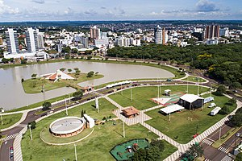
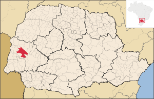

Município do Brasil
Simbolos
Bandeira
Brasão das Armas
Localização

Localização de Toledo no Paraná
Ver mapa ampliado
Mapa de Toledo
Coordenadas: 24° 42' 50" S 53° 44' 34" O
Pais: Brasil
Unidade federativa: Paraná
Região metropolitana: Toledo
Municípios limítrofes: Maripá, Nova Santa Rosa, Santa Tereza do Oeste,
São Pedro do Iguaçu, Assis Chateaubriand, Tupãssi,
Cascavel, Quatro Pontes, Marechal Cândido Rondon e Ouro Verde do Oeste
Distância até a capital: 540 km
História
Fundação: 14 de dezembro de 1951 (69 anos)
Aniversário: 14 de dezembro
Administração
Prefeito(a): Luis Adalberto Beto Lunitti
Pagnussatt[2] (MDB, 2021 – 2024)
Vereadores: 19
Características Globais
Área total: 1 197,016 km²
População total: 144 601 hab.
Posição: PR: 12º
Densidade: 120,8 hab./km²
Clima: Subtropical (Cfa)
Altitude: 550 m
Fuso horário: Hora de Brasília (UTC−3)